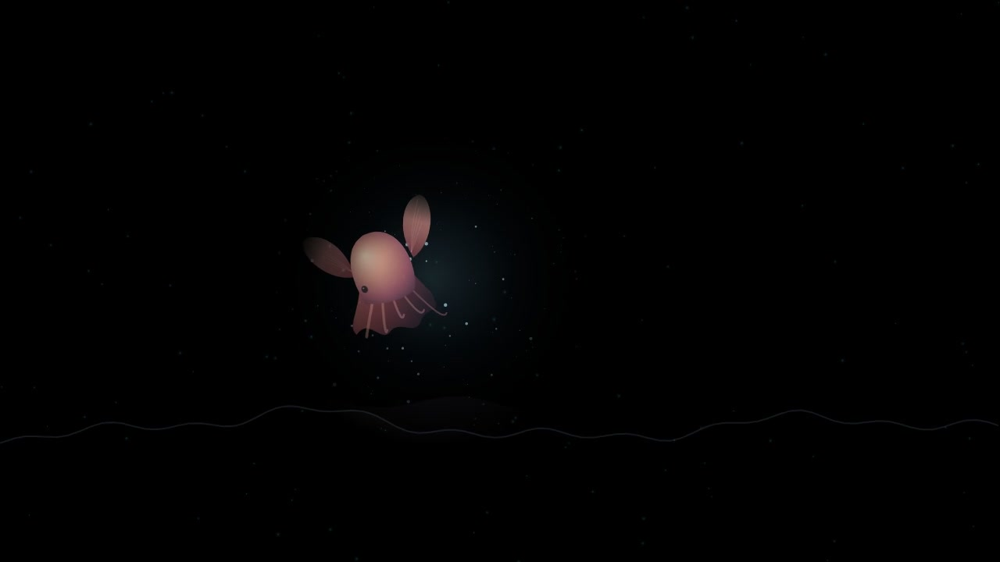
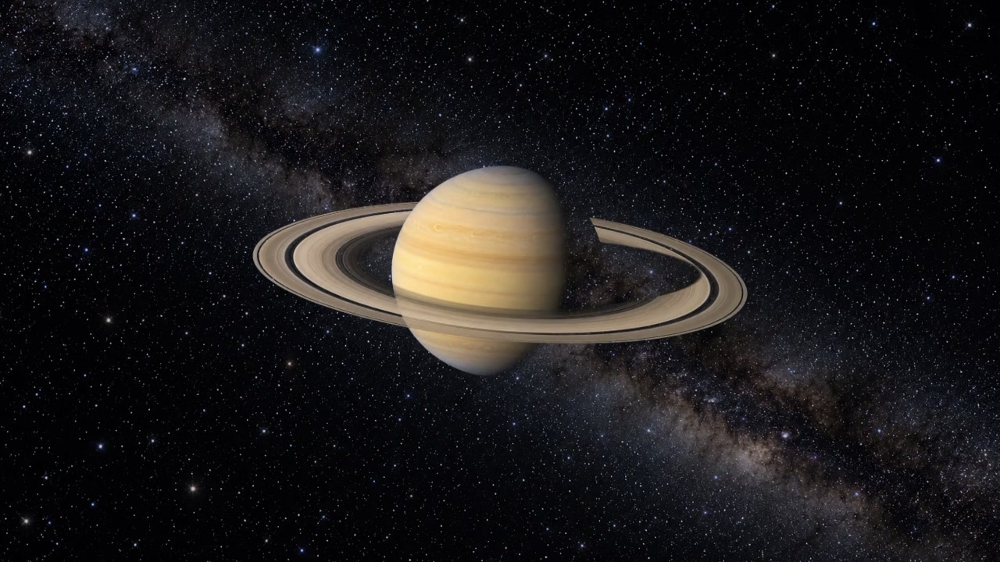

<template><style>
#closing{position:absolute;inset:0;background:#080e18;overflow:hidden;color:#f1f5ff}
.closing-tile{position:absolute;left:0;top:0;width:1280px;height:720px;transform-origin:left top;overflow:hidden}
.closing-tile img{width:100%;height:100%;object-fit:cover;display:block}
.closing-name{position:absolute;top:596px;font-size:33px;font-weight:650}
#closing-name-star{left:120px}#closing-name-sea{left:700px}#closing-name-solar{left:1280px}
#closing-copy{position:absolute;left:120px;right:120px;top:725px;font-size:76px;font-weight:760;letter-spacing:-.03em;line-height:1.22}
#closing-copy span{display:block}#closing-copy span:last-child{color:#bad4ff}
</style><div id="closing" data-composition-id="closing" data-duration="3" data-width="1920" data-height="1080">
<div id="closing-star" class="closing-tile"></div>
<div id="closing-sea" class="closing-tile"></div>
<div id="closing-solar" class="closing-tile" data-layout-allow-overflow></div>
<p id="closing-name-star" class="closing-name">별이 된 문장</p><p id="closing-name-sea" class="closing-name">심해 탐험</p><p id="closing-name-solar" class="closing-name">태양계 여행</p>
<h2 id="closing-copy"><span>말로 시작해,</span><span>내 사이트로 완성합니다.</span></h2></div>
<script>(()=>{const tl=gsap.timeline({paused:true});tl.fromTo('#closing-solar',{x:0,y:0,scale:1.5,borderRadius:0},{x:1280,y:260,scale:.40625,borderRadius:20,duration:.65,ease:'power3.inOut'},0);tl.fromTo('#closing-star',{x:120,y:290,scale:.40625,opacity:0,borderRadius:20},{y:260,opacity:1,duration:.45,ease:'power3.out'},.25);tl.fromTo('#closing-sea',{x:700,y:290,scale:.40625,opacity:0,borderRadius:20},{y:260,opacity:1,duration:.45,ease:'power3.out'},.35);tl.fromTo('.closing-name',{opacity:0,y:12},{opacity:1,y:0,duration:.3,stagger:.06},.6);tl.fromTo('#closing-copy',{opacity:0,y:24},{opacity:1,y:0,duration:.45,ease:'power3.out'},.72);tl.to(['.closing-tile','.closing-name','#closing-copy'],{opacity:0,duration:.18},2.82);window.__timelines=window.__timelines||{};window.__timelines.closing=tl;})();</script></template>
